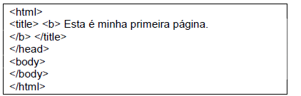

MENU PRINCIPAL
AULAS GRAVADAS
PROVA
CERTIFICADO
AJUDA
LOGOUT
Copyright © 2022
00
Horas
00
Minutos
00
Segundos
PROVA FINAL
Informe seus Dados
Nome Completo:
E-mail:
Questão 1:
Um usuário de um computador com Windows 7 está utilizando o navegador Google Chrome, versão 65, para realizar a busca por informações sobre cursos de informática. Ao localizar uma página com informações interessantes, o usuário decide por salvar a página. Nessa situação, um dos tipos de salvamento da página é: Página da web...
Clique em uma opção abaixo para responder a questão:
A) Somente HTML
B) Imagem JPEG
C) Formato PDF
D) Somente texto
Questão 2:
Assinale a alternativa
INCORRETA
:

A) O código HTML está incompleto
B) O Título será apresentado em negrito na tela
C) A renderização irá depender de cada navegador
D) A tag HEAD está incompleta
Questão 3:
Assinale a alternativa
CORRETA:
A) HTML é um programa que favorece o desenvolvimento de arquivos CSS.
B) HTML e CSS são as tecnologias utilizadas na construção de páginas da Web:HTML (HTML e XHTML) para a estrutura, CSS para o estilo e layout, incluindo WebFonts
C) Ambos são os conceitos fundamentais aplicados em dados abertos conectados
D) CSS é uma linguagem de programação poderosa e requer HTML para seu funcionamento.
Questão 4:
Analise as recomendações abaixo, identificando se são
CORRETAS
ou INCORRETAS do ponto de vista construção de um site com acessibilidade e de acordo com o EMAG.
I. É recomendável disponibilizar o bloco do conteúdo principal da página antes do bloco de menu.
II. A validação de códigos HTML e das folhas de estilo é sugerida como passos de avaliação de acessibilidade.
III. Assegure-se que cores como vermelho e verde sejam usadas para destacar elementos na página.
Quais estão corretas?
A) Apenas I
B) Apenas II
C) Apenas III
D) Apenas I e II
D) Apenas I , II , III
Questão 5:
Acerca de tecnologias, ferramentas e procedimentos associados à Internet e à intranet, julgue os itens ubsequentes. O hipertexto consiste em um sistema de base de dados que integra eficientemente objetos de iferentes tipos, tais como texto, imagens, vídeos, sons e aplicativo.
Sobre a afirmação acima, podemos afirmar que é uma afirmação:
A) Correta
B) Falsa
Questão 6:
Acerca das tecnologias e ferramentas utilizadas em ambientes de intranet e Internet, julgue os próximos ens. O protocolo HTTP permite o acesso a páginas em uma intranet com o uso de um navegador.
Sobre a afirmação acima, podemos afirmar que é uma afirmação:
A) Correta
B) Falsa
Questão 7:
HTML é uma linguagem de marcação que descreve a estrutura de um documento. Essa linguagem é utilizada ara desenvolver páginas Web. Sobre o HTML seguem-se três afirmações:
I - Páginas criadas em HTML sempre são visualizadas da mesma forma em navegadores diferentes, mesmo quando executados em plataformas de hardware diferentes.
II - As páginas escritas em HTML são arquivos de texto no formato ASCII.
III - O HTML possui um conjunto previamente definido de tags, no entanto o usuário pode criar as suas próprias tags.
É correto apenas o que se afirma em:
A) Apenas I
B) Apenas II
C) Apenas III
D) Apenas I e II
D) Apenas II e III
Questão 8:
Em relação aos conceitos de redes de computadores e Internet, julgue os itens que se seguem. O HTML Hypertext Markup Language) é uma linguagem usada para acessar dados na Web.
A) Correto
B) Falso
Questão 9:
A respeito de conceitos relacionados à Internet, julgue os itens que se seguem.
O termo html corresponde a uma linguagem de programação que permite a elaboração de páginas da Web que não tenham figura, mas não permite elaborar páginas da Web que contenham figuras, tabelas ou hyperlinks.
A) Correto
B) Falso
Questão 10:
Para inserir o valor de uma variável de ambiente em uma páginaHTML utiliza-se a diretiva SSI
A) #include.
B) #size
C) #valor
D) #echo
D) #config
Questão 11:
A respeito de uso, conceitos, ferramentas e padrões da internet o uso do XML bloqueia a extensão do uso de recursos HTML. A afirmativa é:
C) Correta
E) Errada
Questão 12:
Com relação ao uso de páginas HTML em uma Intranet, assinale a alternativa que tenha alguma declaração
INCORRETA
:
A)Quando se deseja visualizar páginas HTML que tanham applets, é necessário que o navegador possua um plugin que ofereça uma máquina virtual Java
B) Uma UR mmL, em última análise, representa o nome simbólico de um computador (aonde fica o servidor Web), acrescido do nome de um arquivo cujo conteúdo pode ser um documento HTML, uma imagem ou mesmo um programa.
C)Uma página HTML pode ser gerada dinamicamente no momento em que ela é acessada. Essa geração é feita pelo servidor de páginas Web, usando, dentre outras formas PHP ou ASP
D) HTML podem ser transferidas via HTTP mas não podem ser enviadas por mensagem eletrônica